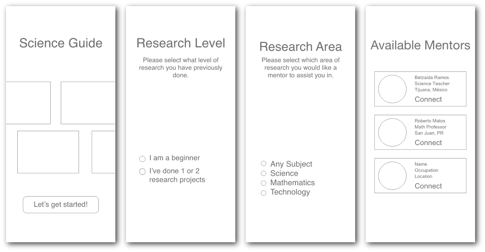
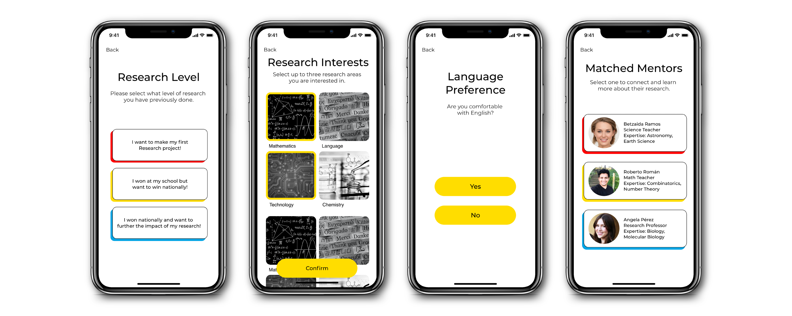

The Spark! Fellowship program is dedicated to catalyzing Boston University student innovators passionate about solving problems through technology. As a Spark! Innovation Fellow, I led the development of the first online research mentorship platform for Latin American High School Students.
The Challenge
School Students in Latin America face hardships while conducting research and lack access to research mentorship and resources. This causes students to become discouraged from pursuing research or showcasing it in science competitions and conferences.
Solution
The My Science Guide app matches students to mentors based on their research interests, experience level, and language. Students and mentors can then connect, learn more about their backgrounds, and chat to share advice, guidance, and feedback on their research journey.
Ideation 💡
The challenge we were focused on solving came from personal experience. In 2016, I was an 11th grade high school student in Puerto Rico showcasing my research at the Intel International Science & Engineering Fair. There, I witnessed something shocking.
There were students from every country in the world but there was a significant educational gap that existed between the quality of research from students in Latin America compared to the rest of the world.
Problem Validation
Given my own personal experience with the issue and speaking with many STEM teachers from around the island, the issue is increasingly prevalent in public low-income schools.
To gauge the scope of this problem in other countries, I launched Facebook Ads for a mock service that promised students and mentors the opportunity of connecting and conducting research.
The ads were linked to a splash page where they can sign up to receive further info.
2 Weeks with $30 Ad Spend:
✅ Targeted to teachers & students from Mexico, Costa Rica, Panama & PR
✅ Around 160,000 Impressions
✅ Over 800 Link Clicks
✅ 50 User Conversions in 5 days!
Customer Interviews
To further understand this problem, I spoke to science & math teachers, research professors, and dozens of students from around the world. Highlights include:
Sullivan: Director of Outreach & Equity Programs at the Society for Science & The Public
As the lead for the Science Advocate Program, Caitlin was knowledgeable about underrepresented student and mentors’ needs. During our conversation, we dove deep into the nature and importance of mentorship in students’ lives. She expressed “Students greatly benefit from having a mentor. They’re more accessible than a research lab and increase their motivation for presenting at top competitions.”
Youth Scientists for Puerto Rico: Largest Private Non-Profit Science Fair in Puerto Rico
Enerys Pagán (President), founded this organization after competing in a US Science Fair and noticing a gap in the quality of projects coming from Puerto Rico compared to the states. They’ve worked with students from all socioeconomic backgrounds in showcasing research. They expressed “One of the brightest students in our fair originally did not even have access to a computer in their house but portrayed an incredible potential that just required some mentoring to let shine.”
Design Sprint
We brought together our market research, customer interviews, and problem validation metrics to a weekend-long design sprint to come up with possible technological approaches to the challenge. It followed the following structure:
1. Understand: Present our collective knowledge on the challenge to the Spark! Fellowship instructors and mentors. See our presentation below.
2. User Story Mapping: Plan out what steps a student might follow to find a mentor and start a research project. Design a minimum story map where they can obtain mentoring through our service.
3. Crazy Eights Exercise: This fast-sketching exercise involves each team member designing a potential feature that provides value for one user story item in 1 minute. Doing 8 of these allows creativity and innovation to flow through all team members.
4. Assumptions Test: Before developing possible solutions, it was important to list out important assumptions that needed testing. These included the effect of language barriers on research quality and the correlation between mentors and the students’ work quality.
5. Wire-framing: Lo-fi wireframes were drawn to connect the structure of our solution and ideate how it could be developed.
User Personas
Two user personas were developed from the insights collected:
Minimum User Stories
User stories were refined and refined until the minimally viable user story that provided enough value to the user was found. In My Science Guide, the user stories focused on forming the student- mentor connections easily and intuitively.
Student
1. Fill out sign-up form
• Preferred research topic
• Experience level
2. Obtain 3 suggested mentor matches
3. See mentor profile information and connect
Mentor
1. Fill out sign-up form
2. Receive coaching resources
3. Wait for initial student response
4. Connect and provide mentorship to students
Wireframes
Sample wireframes were designed to showcase the minimum user story.

Design & Code! 🎨📱
Mockups
Many iterations of our app design were developed, with a 3-step sig- up process chosen as the final version. Bright colors were chosen to suit the high school student demographic. Each feature corresponded to a user story that provided value through the application.

Code Development
My Science Guide was developed using React Native to cater to a diverse range of devices used in Latin America. I developed the Front- End of the application, working through different device sizes and requirements. Development was structured in weekly sprints, where each developer was tasked with implementing one user story into the application.
Launch & Future Development 🚀
Originally planned for a full launch in May 2020, the COVID-19 Pandemic limited our ability to conduct user testing with students using the final app. We pivoted to launching a beta for students and teachers through TestFlight. The app is currently being tested on iOS and stated for a soft-launch in Puerto Rico this Summer!
The My Science Guide Team
I didn’t build this app alone! I owe it all to the amazing My Science Guide team. Special thanks to the Spark! Fellowship instructors, STEM organizations, and communities that made this app possible!